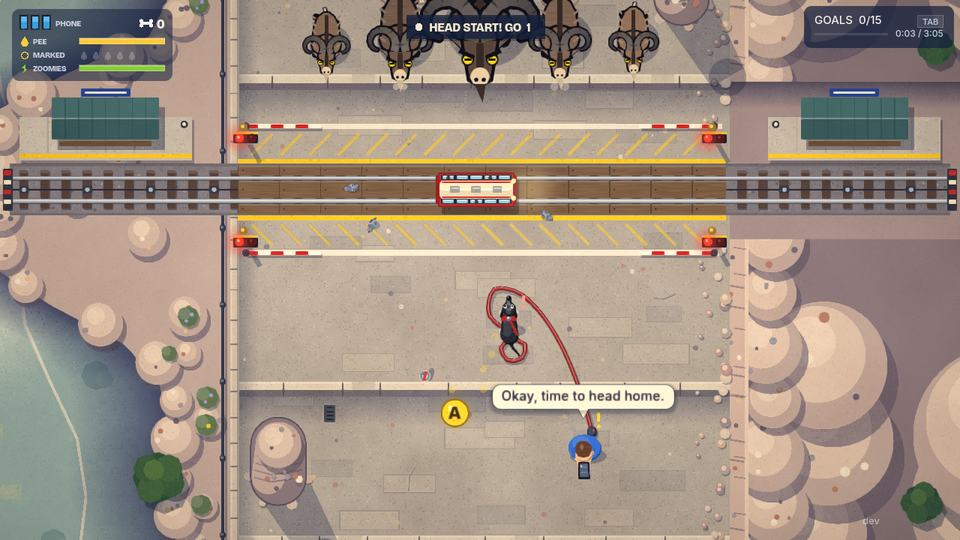
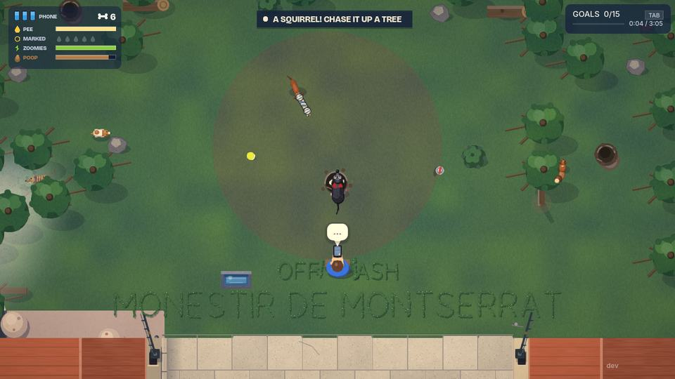

Montserrat
Mountain paths and loose goats
High along Montserrat's sheer gray conglomerate trail past the yellow Sant Joan funicular crossing and mel i mató honey-and-cheese stands up to the monastery. Watch for loose mountain boulders on the climb and wild goats tearing down the stones on the return run.
- Off-leash stop
- MONESTIR DE MONTSERRAT (Wooded clearing)
- Beat the clock
- Under 3:05
- Turnaround warning
- WILD GOATS INCOMING! WATCH FOR BOULDERS!
Screenshots





Goals (15)
- Mark 5 spots
- Have 4 good long sniffs
- Get the phone home without a scratch
- Get yourself home without a bump
- Get your business bagged
- Bring the ball back 3 times
- Wait out or dodge the Sant Joan funicular crossing
- Dodge 3 rolling boulders
- Get home without getting rammed
- Bark at the mel i mató cheese stall
- Land an x3 trick combo
- Snatch the artisanal honey and mato cheese jar
- Spell LEASH
- Find the hidden pernil
- Beat the clock (under 3:05)